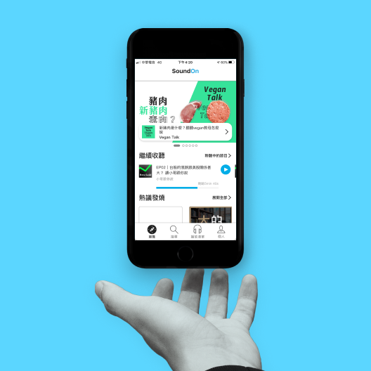

嗨！我是耿恩😊
歡迎來到我的作品集網站！
我是一位生活在台北的使用者體驗設計師，藉著同理與數據資料的研究，了解使用者的痛點與需求，發展成既能解決使用者問題，同時也具備商業可行性的解決方案。
我目前正在尋找全職的使用者體驗設計工作，歡迎email我一起聊聊工作！

Case study 1
重新設計Sound On的瀏覽體驗
透過訪談、可用性測試等研究方法，同理聽眾在SoundOn瀏覽時的痛點及需求，重新設計瀏覽頁等頁面及可動原型，並根據測試的結果進行設計迭代。
可用性測試、質化研究 、繪製線框搞、製作測試原型、測試與迭代
詳細內容
Case study 2
透過訪談、可用性測試等研究方法，同理聽眾在SoundOn瀏覽時的痛點及需求，重新設計瀏覽頁等頁面及可動原型，並根據測試的結果進行設計迭代。
可用性測試、質化研究 、繪製線框搞、製作測試原型、測試與迭代
詳細內容Case study 3